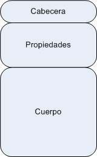
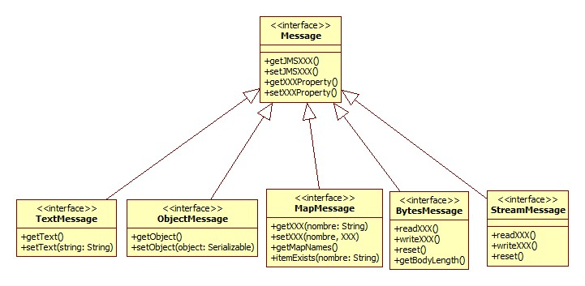
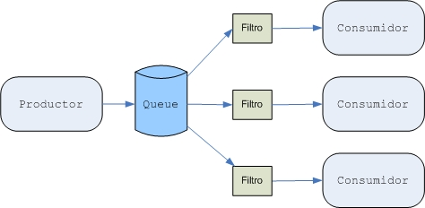
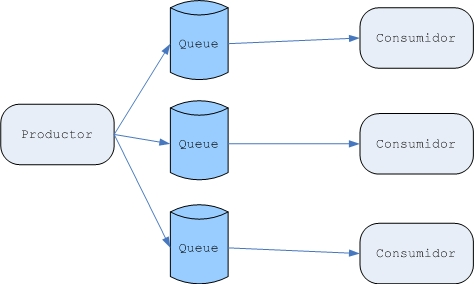
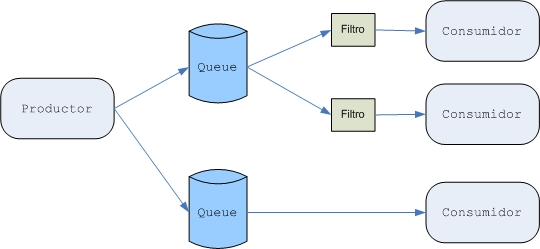
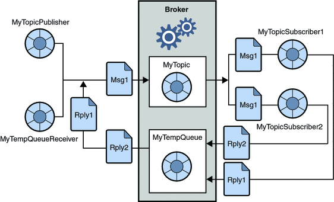
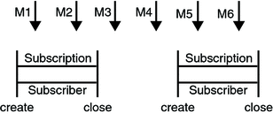
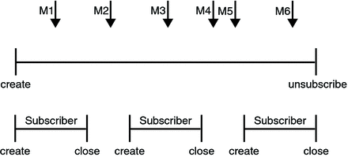
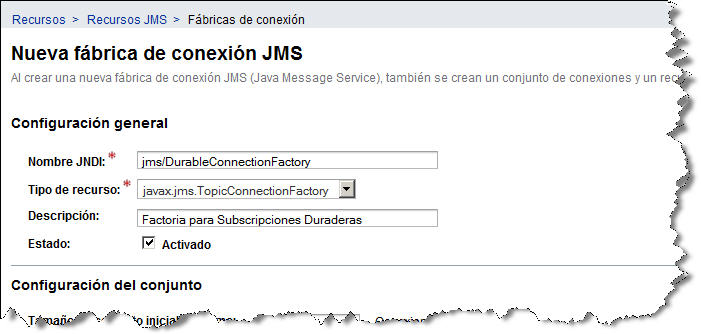
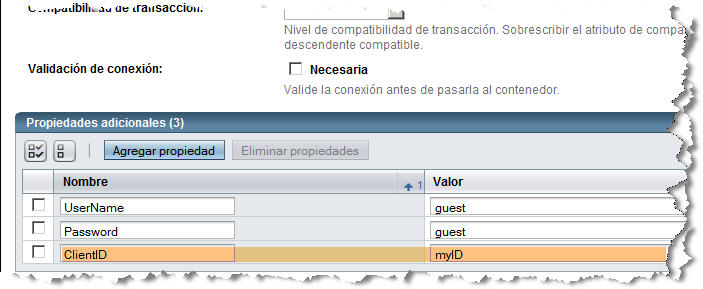

Mensajes y Robustez
Anatomía de un Mensaje
El mensaje JMS es el concepto más importante de la especificación JMS. Cada concepto de la especificación está relacionado con un mensaje porque es el medio mediante el cual los datos y eventos de negocio se transmiten a través de un proveedor JMS.
Debido a que los sistemas de mensajería han sido implementados sin seguir ningún formato de mensaje estándar, existe un gran abanico de formatos de mensaje entre los MOMs. Esto es así, y JMS no lo quiere cambiar. De hecho, JMS no define cual debe ser el formato de los mensajes, sino mediante un modelo de mensaje unificado y abstracto garantiza la portabilidad del código. Esto es, en vez de dictar cómo debe ser el formato de los mensajes, especifica el API a utilizar para construir el mensaje.
El modelo de mensaje unificado bajo JMS especifica que todos los mensajes deben representarse mediante objetos que implementen el interfaz javax.jms.Message. Y este interfaz separa un mensaje JMS en tres partes:

Las cabeceras ofrecen metadatos sobre el mensaje utilizado por ambos clientes y el proveedor JMS. Las propiedades son campos opcionales dentro del mensaje para añadir información adicional al mensaje. El cuerpo puede contener tanto texto como datos binarios mediante los diferentes tipos de mensajes.
Cabecera
Todos los mensajes JMS soportan la misma lista estándar de cabeceras, y el API JMS ofrece métodos (getters y setters) para trabajar con dichas cabeceras. Muchas de las cabeceras se asignan automáticamente, ya sea por el cliente o por el proveedor.
Las cabeceras que automáticamente rellena el proveedor JMS al realizar la llamada al método send() del cliente son:
- JMSDestination - Destino al que se envía el mensaje. En el caso de un modelo PTP especifica la cola, y el Pub/Sub el tópico. Esta cabecera es muy útil para aquellos clientes que consumen mensajes de más de un destino.
-
JMSDeliveryMode - JMS soporta 2 tipos de modos de entrega: persistente y no-persistente. El modo de entrega por defecto es persistente. Cada modo de entrega incurre en su propia sobrecarga e implica un nivel particular de fiabilidad.
- Persistent - Informa al proveedor que persista los mensajes para que no se pierdan en el caso de que caiga el proveedor. El proveedor debe entrar un mensaje persistente una única vez. Dicho de otro modo, si el proveedor JMS falla, el mensaje no se pierde y no se enviara dos veces. Los mensajes persistentes incurren en una sobrecarga debido a la necesidad de almacenar el mensaje, de modo que la fiabilidad prevalece sobre el rendimiento.
- Non-Persistent - Informa al proveedor JMS que no persista los mensajes. Un proveedor JMS debe entregar un mensaje persistente como mucho una vez. Dicho de otro modo, si el proveedor JMS falla, el mensaje se puede haber perdido, pero no se entregará dos veces. Los mensajes no persistentes incurren en una menor sobrecarga, de modo que el rendimiento prevalece sobre la fiabilidad.
producer.setDeliveryMode(DeliveryMode.NON_PERSISTENT)
De forma individual, el modo de entrega se puede sobrecarga para cada mensaje:message.setJMSDeliveryMode(DeliveryMode.NON_PERSISTENT)
- JMSExpiration - Previene la entrega una vez que el mensaje ha expirado. Se trata de una cabecera muy útil para los mensajes sensibles al tiempo. Los clientes deberían tener en cuenta la expiración para desechar los mensajes sin procesar que han expirado. Por defecto, el tiempo de vida es 0.
- JMSMessageID - Una cadena que identifica unívocamente a un mensaje, se asigna por el proveedor JMS y debe empezar con 'ID:'. Esta cabecera se puede utilizar para el procesamiento de mensajes o para propósito de histórico en un mecanismo de almacenamiento de mensajes.
-
JMSPriority - Se utiliza para asignar un nivel de importancia. Esta cabecera también la asigna el productor de mensajes. Una vez un productor le asigna la prioridad, se aplica a todos los mensajes enviados desde dicho productor. La prioridad se puede sobrecargar para mensajes individualizados. JMS define 10 niveles de prioridad de mensajes, siendo 0 el más bajo, 9 el más alto y la prioridad normal de nivel 5.
Los proveedores JMS no están obligados a implementar la ordenación de mensajes, aunque la mayoría lo hace. Lo que tienen que hacer es entregar los mensajes con mayor prioridad antes que los de menor prioridad. - JMSTimestamp - Denota el instante en el que se envió el mensaje. Esta cabecera se puede deshabilitar par reducir la carga de trabajo del proveedor JMS.
Las cabeceras asignadas de forma opcional por el cliente son:
- JMSCorrelationID - Se utiliza para asociar el mensaje actual con el anterior. Esta cabecera se suele utilizar en la entrega asíncrona de mensajes, y en los mecanismos de request/reply.
- JMSReplyTo - Se utiliza para especificar un destino al cual debería responder el cliente. Se suele utilizar para estilos de mensajería de request/reply.
- JMSType - Utilizada para identificar semánticamente al mensaje, es decir, el tipo del cuerpo del mensaje. Esta cabecera la utilizan muy pocos proveedores.
Las cabeceras asignadas de forma opcional por el proveedor:
- JMSRedelivered - Se utiliza para indicar que un mensaje ha sido reenviado. Esto puede suceder si un consumidor falla en el acuse de recibo o si el proveedor JMS no ha sido notificado del envío.
Propiedades
Las propiedades son más o menos cabeceras adicionales que pueden especificarse en un mensaje. Al contrario que las cabeceras, son opcionales. Las propiedades son pares de {nombre, valor}, y JMS ofrece métodos genéricos para trabajar con propiedades cuyo tipo de valor sea boolean, byte, short, int, long, float, double, o String. Las propiedades se inicializan cuando se envía un mensaje, y al recibir pasan a ser de sólo lectura.
Existen tres tipos de propiedades: propiedades arbitrarias o de aplicación, propiedades definidas por JMS y propiedades específicas del proveedor.
Propiedades de Aplicación
Estas propiedades son arbitrarias y las define una aplicación JMS. Los desarrolladores de aplicaciones JMS pueden definir libremente cualquier propiedad que necesiten mediante los métodos genéricos comentados anteriormente.
Si queremos añadirle a un mensaje un propiedad Anyo e inicializarla a 2008, haremos:
message.setIntProperty("Anyo", 2008);
Propiedades Definidas por JMS
La especificación JMS reserva el prefijo de propiedades 'JMSX' para las propiedades definidas por JMS. El soporte de estas propiedades es opcional:
- JMSXAppID - Identifica la aplicación que envía el mensaje.
- JMSXConsumerTXID - Identificador de la transacción dentro de la cual el mensaje ha sido consumido.
- JMSXDeliveryCount - Número de intentos de entrega del mensaje.
- JMSXGroupID - Grupo del mensaje del cual forma parte el mensaje.
- JMSXGroupSeq - Número de secuencia del mensaje dentro del grupo.
- JMSXProducerTXID - Identificador de la transacción dentro de la cual el mensaje ha sido producido.
- JMSXRcvTimestamp - Instante en el que el proveedor JMS entregó el mensaje al consumidor.
- JMSXState - Se utiliza para definir un estado específico del proveedor.
- JMSXUserID - Identifica al usuario que envía el mensaje.
La única recomendación que ofrece la especificación para el uso de estas propiedades es para las propiedades JMSXGroupID y JMSXGroupSeq, indicando que dichas propiedades deberían utilizarse por los clientes cuando se agrupen mensajes.
Propiedades Específicas del Proveedor
La especificación JMS reserva el prefijo de propiedad 'JMS_vendor-name' para propiedades específicas del proveedor. Cada proveedor define sus propios valores para sus propiedades. En su mayoría las utilizan los clientes no-JMS, atados al proveedor, y por tanto, no deberían utilizarse entre mensajerías JMS.
Cuerpo
El cuerpo de los mensajes permite enviar y recibir datos e información con diferentes formatos, ofreciendo compatibilidad con los formatos de mensaje existentes. El cuerpo también se conoce como carga (payload).
JMS define seis tipos de cuerpo para los mensajes, también conocidos tipos de mensajes:
- Message - Tipo de mensaje base. Se utiliza para enviar un mensaje sin cuerpo, solo cabeceras y propiedades. Normalmente se utiliza para notificación simple de eventos.
- MapMessage - Compuesto de un conjunto de pares {nombre,valor}. El tipo de los nombres es String, y los valores tipos primitivos Java. A los nombres (que no están ordenados) podemos acceder de forma secuencial mediante un enumerador, o por acceso directo por nombre.
- BytesMessage - Contiene un array de bytes sin interpretar. Se utiliza para hacer coincidir el cuerpo con un formato de mensaje existente (legacy).
- StreamMessage - El cuerpo es un flujo de tipos primitivos Java, cuya lectura y escritura se realiza de modo secuencial.
- TextMessage - Un mensaje cuya carga es un String. Se suele utilizar para enviar texto simple y datos XML.
- ObjectMessage - La carga es un objeto Java Serializable. Normalmente se utiliza para trabajar con objetos Java complejos.

Creando Mensajes
El API JMS ofrece diferentes métodos para crear los mensajes de cada tipo (a partir de una Session, mediante los métodos createXXXMessage, siendo XXX el tipo de mensaje), y para rellenar sus contenidos. Por ejemplo, para crear y enviar un mensaje de texto podríamos hacer:
TextMessage mensaje = session.createTextMessage(); mensaje.setText(miTexto); producer.send(mensaje);
Si lo que queremos es enviar un objeto, crearemos un mensaje del siguiente modo:
ObjectMessage mensaje = session.createObjectMessage(); mensaje.setObject(miLibroEntity); // el objeto miLibroEntity debe ser Serializable !!!!
Así pues, si al rellenar el mensaje de tipo objeto, el objeto no es Serializable obtendremos una excepción del tipo MessageFormatException.
Recibiendo Mensajes
En el destino, el mensaje llega como un objeto de Message genérico, y debemos hacer el cast al tipo de mensaje apropiado. Los diferentes tipos de mensaje ofrecen diversos métodos para extraer el contenido del mensaje. Por ejemplo, el código necesario para extraer el contenido de un mensaje de texto:
Message m = consumer.receive();
if (m instanceof TextMessage) {
TextMessage mensaje = (TextMessage) m;
System.out.println("Leyendo mensaje: " + mensaje.getText());
} else {
// Manejar el error
}
Filtrado de Mensajes
En ocasiones necesitaremos ser más selectivos a la hora de recibir un mensaje de una determinada cola o tópico. El filtrado de mensajes nos va a permitir elegir que mensajes consumir, de modo que no sea obligatorio consumir todos los mensajes de un destino.
Selector de Mensajes
Si queremos filtrar los mensajes que recibe la aplicación lo podemos hacer mediante un selector de mensajes, ya que permite a un receptor definir en que mensajes esta interesado a través del uso de las cabeceras y propiedades. Solo aquellos mensajes cuyas cabeceras o propiedades coincidan con el selector estarán disponibles para su consumición (los selectores no pueden referenciar al cuerpo del mensaje).
Un selector de mensajes es un String que contiene una expresión, definida mediante un subconjunto de la sintaxis de expresiones condicionales de SQL92. Por lo tanto, mediante una expresión condicional cuyos operandos son las cabeceras o las propiedades y el operador adecuado (operador lógico, between, like, in(...), is null), los clientes puede definir cuales son los mensajes permitidos. Por ejemplo, si nuestro mensaje define las propiedades Anyo y Mes, las siguientes son expresiones validas: Anyo = 2011, Mes = 'Diciembre', Mes LIKE '%BRE', Anyo BETWEEN 2000 AND 2011, etc...
Podemos encontrar más información sobre los operadores y las cabeceras aplicables dentro de un selector en el javadoc de la interfaz Message: java.sun.com/javaee/5/docs/api/javax/jms/Message.html
El selector de mensajes se utiliza a la hora de crear el consumidor de mensajes (o subscriptor durable), mediante los métodos createConsumer(Destination destino, String selectorMensaje) ( y su respectivo createDurableSubscriber) del interfaz Session. Si el selector no es correcto, al crear el consumidor de mensajes obtendremos una excepción del tipo javax.jms.InvalidSelectorException. Una vez hemos creado el consumidor de mensajes, podemos consultar cual es su selector mediante el método getMessageSelector(). Así pues, por ejemplo, podriamos hacer:
MessageConsumer consumer = session.createConsumer(queue, "Anyo = 2011"); String selectorAnyo2008 = consumer.getMessageSelector();
Aquellos mensajes que no cumplen las expresiones del selector no se entregan al cliente. Esto significa que aquellos mensajes no entregados dependerán del MessageConsumer utilizado. Una vez se establece el selector de mensajes, no puede cambiarse. Tenemos que cerrar el consumidor (o borrarlo si es un subscriptor durable) y crear un nuevo consumidor con su nuevo selector de mensajes.
Si tenemos un selector que hace "Anyo < 2010" y su complementario "Anyo > 2010", ¿Qué pasará con los mensajes cuyo año sea 2010?
Selectores vs Múltiples Destinos
Existen 2 enfoques a la hora de considerar una solución basada en mensajes. Podemos enviar todos los mensajes a un único destino JMS y utilizar filtrado de mensajes para consumir los mensajes específicos (enfoque de Filtrado de Mensajes), o podemos utilizar múltiples destinos JMS que contienen los mensajes ya filtrados (enfoque de Múltiples Destinos).
Gráficamente, podemos observar más facilmente los diferentes planteamientos:

Claramente, se observa que el consumidor del mensaje el que tiene el control sobre el filtrado y sobre los mensajes que quiere recibir. Este enfoque dota de un alto nivel de desacoplamiento entre los componentes que producen mensajes respecto a los consumidores, ya que el productor necesita menos informacion sobre como se van a procesar los mensajes.
En cambio, con el enfoque de múltiples destino, el filtrado se realiza antes de enviar el mensaje al destino adecuado, ya que cada destino contiene los mensajes específicos que se utilizarán. Este filtrado se realiza mediante código Java para determinar a que destino se debe enviar el mensaje.

Podemos observar que ahora es el productor de mensajes el que tiene el control sobre el filtrado y decide a que destinos llegaran los mensajes apropiados. Un factor clave a la hora de considerar este enfoque es saber si el productor tiene suficiente información refecto a como se procesan los mensajes para tomar la decisión sobre a que destino enrutar el mensaje. Cuanto más información necesita el productor sobre la consumición del mensaje, mayor será el acoplamiento entre productor y consumidor.
Por último, para beneficiarnos de ámbos enfoques, también se puede hacer un uso de un enfoque combinado:

Browser de Mensajes
En la sesión anterior vimos como recibir mensajes de una cola, pero supongamos que solo queremos consultar el contenido de la cola sin consumir los mensajes. Para este propósito, en vez de utilizar un MessageConsumer, crearemos un QueueBrowser.
Para crear un objeto de este tipo, utilizaremos el método createBrowser de la Session, indicándole la cola a inspeccionar:
QueueBrowser browser = session.createBrowser(queue);
También podemos crear un browser que filtre los mensajes en los que estamos interesados, pasándole como segundo argumento el selector de mensajes:
QueueBrowser browser = session.createBrowser(queue, "provincia = 'Alicante'");
La interfaz QueueBrowser contempla unos cuantos métodos a destacar:
- getEnumeration() para obtener los mensajes
- getMessageSelector() para obtener el String que actúa como filtro de mensajes (si es que hay alguno para ese consumidor)
- getQueue() que devuelve la cola asociada al browser.
Así pues, una vez creado el browser, obtenemos una enumeración para iterar sobre ella e ir obteniendo las propiedades del mensaje, tales como la prioridad, el identificador, etc...
Enumeration iter = browser.getEnumeration();
if (!iter.hasMoreElements()) {
System.out.println("No hay mensajes en la cola");
} else {
while (iter.hasMoreElements()) {
Message tempMsg = (Message) iter.nextElement();
System.out.println("Mensaje: " + tempMsg);
}
}
Con el browser obtenemos el estado actual de una cola y nos permite visualizar aquellos mensajes que no han sido recogidos por una mala sincronización. El resultado de una consulta como la anterior sería algo así:
Mensaje:
Text: Hola Mundo
Class: com.sun.messaging.jmq.jmsclient.TextMessageImpl
getJMSMessageID(): ID:41-172.18.33.103(d6:f1:b9:3e:e:4f)-52900-1229023964087
getJMSTimestamp(): 1229023964087
getJMSCorrelationID(): null
JMSReplyTo: null
JMSDestination: jmsQueue
getJMSDeliveryMode(): PERSISTENT
getJMSRedelivered(): false
getJMSType(): null
getJMSExpiration(): 0
getJMSPriority(): 4
Properties: {Anyo=2008}
Podemos observar como se muestra el contenido del cuerpo, el tipo de mensajes, todas las cabeceras, así como aquellas cabeceras con valor asignado. Por ejemplo, podemos ver como aparece la propiedad que hemos añadido en la sección anterior.
JMS Robusto
El API de JMS está destinado a garantizar la robustez, y al mismo tiempo (si se puede) eficiencia de nuestras aplicaciones distribuidas. En este sentido, es esencial no tolerar situaciones en donde los mensajes no llegan o bien llegan duplicados, lo que incide muy negativamente en la sincronización de la componentes software.
Por eso, JMS garantiza que:
- El mensaje será recibido
- Y solamente será recibido una vez
Implementar esta funcionalidad por parte del servidor de aplicaciones implica, por ejemplo, dotar la infraestructura JMS con una capa de persistencia. De hecho, la forma más fiable de producir un mensaje es enviar un mensaje PERSISTENT (el modo de creación de mensajes por defecto) dentro de una transacción. También, la forma más robusta de consumir un mensaje es dentro de una transacción y a partir de una cola o de un Durable Subscriber a un tópico.
Sin embargo, tomar las medidas anteriores supone un elevado consumo de recursos y por lo tanto una caída del rendimiento. Así, y como veremos a continuación, se pueden conseguir soluciones menos robustas manipulando el nivel de prioridad de los mensajes (JMS intenta transmitir primero los mensajes con mayor prioridad aunque eso no se garantiza en la práctica) o controlar el tiempo de vida de los mensajes (si se fija a cero eso indica que no caduca nunca). En un caso extremo, para aliviar la carga de la capa de persistencia se pueden enviar mensajes NON_PERSISTENT lo cual libera a JMS de garantizar dicha persistencia si el proveedor de mensajes falla. Por último, también podemos crear colas temporales, que se mantienen mientras dura la conexión, pero con ellas se corre el riesgo de perder los mensajes si hay fallos. Todas estas medidas deberán tomarse solo si la aplicación puede permitírselas mientras garantiza su funcionalidad.
A continuación estudiaremos los diferentes mecanismos para conseguir o que afectan a la entrega fiable de los mensajes.
Controlar el Acuse de Recibo de los Mensajes
Hasta que no se recibe un acuse de recibo de un mensaje, éste no se considera consumido exitosamente. La consumición exitosa de un mensaje se lleva a cargo en tres fases:
- El cliente recibe el mensaje
- El cliente procesa mensaje
- Se acusa el recibo del mensaje. Este acuse se inicia por parte del proveedor JMS o por el cliente, dependiendo del modo de acuse de la sesión.
En las sesiones transaccionales (mediante las transacciones locales), el acuse ocurre automáticamente cuando se hace el commit de la transacción. Si se produce un rollback de la transacción, todo los mensajes consumidos se vuelven a re-entregar.
En las sesiones no transaccionales, el cuando y el cómo se acusa depende del valor especificado como segundo argumento del método createSession. Los tres posibles valores para este argumento son:
-
Session.AUTO_ACKNOWLEDGE: La sesión automáticamente realiza el acuse al mensaje de cliente tanto si el cliente ha retornado exitosamente de una llamada MessageConsumer.receive(), o cuando el listener de mensaje llamado para procesar el mensaje, MessageListener.onMessage(), retorna exitosamente.
Una recepción síncrona en una sesión AUTO_ACKNOWLEDGE es la excepción a la regla que la consumición del mensaje es un proceso de tres fases como anteriormente comentado.
En este caso, la recepción y el acuse tienen lugar en un único paso, seguido por el procesamiento del mensaje. -
Session.CLIENT_ACKNOWLEDGE: Un cliente acusa un mensaje mediante la llamada al método acknowledge() del mensaje. En este modo, el acuse se realiza a nivel de sesión: El acuse de un mensaje consumido automáticamente implica el acuse de la recepción de todos los mensajes que se han consumido por dicha sesión.
Por ejemplo, si un consumidor de mensajes consume diez mensajes y a continuación acusa el quinto mensaje entregado, los diez mensajes son acusados. -
Session.DUPS_OK_ACKNOWLEDGE: Esta opción instruye a la sesión a realizar el acuse de recibo de los mensajes de un modo tardío (lazy). Esto supone la entrega de mensajes duplicados en el caso de que el proveedor JMS falle, por lo tanto solo debería utilizarse por aquellos consumidores que puede tolerar mensajes duplicados (si el proveedor JMS reenvia un mensaje, debe poner el valor de la cabecera JMSRedelivered a true).
Esta opción puede reducir la sobrecarga de la sesión minimizando la cantidad de trabajo que ésta realiza para prevenir duplicados.
Como hemos comentado, especificaremos el tipo de acuse al crear la sesión mediante el flag apropiado:
TopicSession session = topicConnection.createTopicSeccion(false, Session.CLIENT_ACKNOWLEDGE);
Si se ha recibido un mensaje de una cola pero no se ha realizado el acuse al terminar la sesión, el proveedor JMS los retiene y los re-entrega cuando el consumidor vuelve a acceder a la cola. El proveedor también retiene aquellos mensajes que no han sido acusados para aquellas sesiones realizadas por un TopicSubscriber.
En el caso de utilizar una cola o una subscripción duradera, se puede utilizar el método Session.recover() para detener una sesión no transaccional y reiniciarla con su primer mensaje sin acuse de recibo realizado. En efecto, las series de sesiones de los mensajes enviados se resetean hasta el punto posterior al último mensaje acusado. El mensaje que ahora se envía puede ser diferente de aquellos que originalmente fueron enviados, si los mensajes han expirado o si han llegado mensajes con una prioridad mayor. Para un TopicSubscriber no durable, el proveedor puede perder mensajes sin acusar cuando se recupera su sesión.
Especificar la Persistencia de los Mensajes
JMS soporta dos modos de entrega de mensajes para especificar si los mensajes se pierden al caerse el proveedor. Estos modos de entrega se definen como campos del interfaz DeliveryMode:
- El modo PERSISTENT, el cual es el modo por defecto, le indica al proveedor JMS a tomar un cuidado extra para asegurar que no se pierde ningún mensaje en el hipotético caso de que fallase el proveedor JMS. Un mensaje enviado con este modo de entrega se almacena es un almacenamiento estable al enviarse.
- El modo NON_PERSISTENT no obliga al proveedor a almacenar el mensaje, y por tanto, no garantiza que no se pierda el mensaje en el caso de que falle el proveedor.
Podemos especificar el modo de entrega de dos maneras:
- Mediante el método MessageProducer.setDeliveryMode() para indicar el modo de entrega para todos los mensajes enviados por dicho productor. Por ejemplo:
producer.setDeliveryMode(DeliveryMode.NON_PERSISTENT);
- Mediante el modo largo del método send() o publish() para cada mensaje de forma individual. El segundo parámetro indica el modo de entrega. Por ejemplo:
producer.send(message, DeliveryMode.NON_PERSISTENT, 3, 10000);
El tercer y cuarto parámetro indican el nivel de prioridad y el periodo de expiración, los cuales explicaremos en los siguientes apartados.
Como hemos dicho, si no especificamos nada, el modo por defecto es DeliveryMode.PERSISTENT. Mediante el modo DeliveryMode.NON_PERSISTENT podemos mejorar el rendimiento y reducir la sobrecarga por almacenamiento, pero deberemos cuidarnos de utilizarlo solo en aquellas aplicaciones que puedan permitirse la pérdida de mensajes.
Indicar el Nivel de Prioridad
Podemos utilizar diferentes niveles de prioridad para que el proveedor JMS envíe primero los mensajes más urgentes. Podemos indicar este nivel de dos maneras:
- Mediante el método MessageProducer.setPriority() para indicar el nivel de prioridad de todos los mensajes enviados por dicho productor. Por ejemplo:
producer.setPriority(7);
- Mediante el modo largo del método send() o publish() para cada mensaje de forma individual. El tercer parámetro indica el nivel de prioridad de entrega. Por ejemplo:
producer.send(message, DeliveryMode.NON_PERSISTENT, 3, 10000);
Los diez niveles de prioridad van desde el 0 (el más bajo) al 9 (el más alto). Si no se especifica ningún nivel, el nivel por defecto es 4. El proveedor JMS debería entregar los mensajes de mayor prioridad antes que los de menor prioridad, pero esto no implica que lo tenga que entregar en el orden exacto de prioridad.
Permitir la Expiración de los Mensajes
Por defecto, un mensaje nunca expira. En el caso de necesitar que un mensaje se vuelva obsoleto tras pasar un cierto periodo de tiempo, podemos indicar un periodo de expiración. Podemos hacerlo de dos maneras:
- Mediante el método MessageProducer.setTimeToLive() para indicar un periodo de expiración por defecto para todos los mensajes enviados por dicho productor. Por ejemplo:
producer.setTimeToLive(60000); // 1 min
- Mediante el modo largo del método send() o publish() para cada mensaje de forma individual. El cuarto parámetro indica el tiempo de vida (timeToLive) en milisegundos. Por ejemplo:
producer.send(message, DeliveryMode.NON_PERSISTENT, 3, 10000); // 10 seg
Si el valor especificado como timeToLive es 0, el mensaje nunca expira.
Cuando se envía el mensaje, el periodo especificado como timeToLive se añade al tiempo actual para calcular el periodo de expiración. Cualquier mensaje que no se ha enviado antes del periodo de expiración especificado será destruido. La destrucción de los mensajes obsoletos preserva el almacenamiento y los recursos computaciones.
Crear Destinos Temporales
Por norma general, crearemos los destinos JMS (colas y tópicos) de modo administrativo más que programativo. Todo proveedor JMS incluye una herramienta de administración para crear y eliminar destinos, y estos destinos, una vez creados, no suelen borrarse.
JMS también permite crear destinos (TemporaryQueue y TemporaryTopic) que duran lo que dura la conexión que los ha creado. Así pues, crearemos estos destinos de forma dinámica mediante los métodos Session.createTemporaryQueue() y Session.createTemporaryTopic().
Los únicos consumidores de mensajes que pueden consumir de un destino temporal son aquellos creados por la misma conexión que creó los destinos. Cualquier productor de mensajes puede enviar a un destino temporal. Si cerramos la conexión a la que pertenece un destino temporal, el destino se cierra y se pierden sus contenidos.
Podemos utilizar destinos temporales para implementar un mecanismo sencillo de request/reply.
Simulando Llamadas Síncronas Mediante Request/Reply
En ciertos casos puede venirnos bien implementar un mecanismo de petición y respuesta de tal forma que quedemos a la espera de que la petición se satisfaga. Así pues, mediante este mecanismo simulamos una comunicación síncrona mediante un sistema asíncrono.
Los pasos que necesita un cliente para simular una comunicación síncrona con un dominio punto a punto son:
- Crear una cola temporal mediante el método createTemporaryQueue() de la sesión de la cola
- Asignar a la cabecera JMSReplyTo esta cola temporal (de este modo, el consumidor del mensaje utilizará este cabecera para conocer el destino al que enviar la respuesta).
- Enviar el mensaje.
- Ejecutar un receive con bloqueo en la cola temporal, mediante una llamada al método receive en la cola del receptor para esta cola temporal
El consumidor también puede referenciar a la petición original asignando a la cabecera JMSCorrelationID del mensaje de respuesta con el valor de la cabecera JMSMessageID de la petición.
A continuación se muestra un diagrama del mecanismo request/reply con el dominio Pub/Sub:

Para reducir la cantidad de trabajo que tienen que hacer los clientes, JMS ofrece una pareja de clases auxiliares (QueueRequestor and TopicRequestor) que gestionan toda la configuración requerida por los anteriores pasos. Un requestor es un objeto que convierte un intercambio de mensajes en una especie de llamada a procedimiento remoto. Existen tanto QueueRequestor como TopicRequestor aunque este tipo de objetos se usan fundamentalmente en el modelo punto-a-punto, esto es con colas, en donde existe un solo receptor de la petición, que responde al request. Si se utilizase el modelo de subscripción solo la respuesta del primer subscriptor que responde se tendría en cuenta por el requestor y el resto de ellas se perdería.
Subscripciones Duraderas
Para estar seguro de que una aplicación Pub/sub recibe todos los mensajes publicados, debe usarse el modo de envío PERSISTENT en la construcción del mensaje. Pero adicionalmente, en este caso puede usarse un durable subscriber para los subscriptores.
La idea básica de un subscriptor duradero es que una subscripción de este tipo permanece activa a pesar de que el subscriptor cierre su conexión, de modo que recibirá los mensajes publicados cuando el subscriptor no estaba activo. Este mecanismo ofrece la fiabilidad de las colas dentro del dominio pub/sub.
Durable vs Non Durable
Mediante un subscriptor ordinario, no duradero, tanto el subscriptor como la subscripción comienzan y finalizan al mismo tiempo, y por tanto, su vida es idéntica. Al cerrar un subscriptor, la subscripción también finaliza. En el gráfico, create referencia una llamada a Session.createConsumer() pasándole un tópico como parámetro, y close a una llamada a MessageConsumer.close(). Cualquier mensaje publicado al tópico entre el primer close y el segundo create no llega a consumirse por ningún subscriptor, de modo que los mensajes M3 y M4 se pierden.

Con una subscripción duradera, el subscriptor puede cerrarse y recrearse, pero la subscripción sigue existiendo y mantiene los mensajes hasta que la aplicación realiza una llamada al método unsubscribe. En el gráfico, create referencia una llamada a Session.createDurableSubscriber(), close a una llamada a MessageConsumer.close() y unsubscribe a Session.unsubscribe(). Los mensajes publicados mientras el subscriptor esta inactivo se reciben al volver a crear el subscriptor. De este modo, incluso los mensajes M2, M4 y M5 llegan al destino, y por tanto no se pierden.

Creación y Manejo
A coste de incrementar la carga del servidor, podemos utilizar el método Session.createDurableSubscriber para crear un subscriptor durable, con la restricción de que una subscripción de este tipo solo puede tener un subscriptor activo a la vez.
Un subscritor duradero registra una subscripción duradera especificando una identidad única la cual retiene el proveedor JMS. Los siguientes subscriptores que tengan la misma identidad continúan con la subscripción en el mismo estado en el que quedó la subscripción una vez finalizó el subscritor previo. Si una subscripción duradera no tiene ningún subscriptor activo, el proveedor JMS retiene los mensajes hasta que alguien los consume o que expiran.
Para establecer la identidad única de un subscriptor indicaremos:
- Un ID de cliente para la conexión
- Un nombre de tópico y de subscripción para el subscriptor
Para indicar el ID de cliente, lo podemos hacerde forma administrativa para una factoría de conexiones específica de un cliente. Supongamos que llamamos a esa factoría especial jms/DurableConnectionFactory. La crearemos de la forma habitual desde el servidor de aplicaciones asignándole como tipo TopicConnectionFactory y añadiendo en la parte inferior de la ventana una propiedad llamada ClientID con valor myID. Dicha propiedad define la identidad:


Tras crear la factoría de conexiones para crear la conexión y la sesión, utilizaremos el método createDurableSubscriber() con dos parámetros, el tópico y el nombre de la subscripción:
String nombreSub = "MiSub"; MessageConsumer topicSubscriber = session.createDurableSubscriber(topic, nombreSub);
El subscriptor se activa tras iniciar la conexión. Si queremos cerrar el subscriptor, llamaremos a:
topicSubscriber.close();
Para eliminar una subscripción duradera, primero cerraremos el subscriptor, y posteriormente mediante el método unsuscribe() (pasándole como parámetro el nombre de la subscripción) eliminamos la subscripción y el estado que mantiene el proveedor para el subscriptor:
topicSubscriber.close(); session.unsubscribe(nombreSub);
Ejemplo
Veamos como funciona el mecanismo de la subscripción duradera en siguiente ejemplo. El código del ejemplo se encuentra en DurableSubscriberExample.java.
Desde el main() se invoca ya al método runProgram() que crea, por un lado, un objeto llamado DurableSubscriber que se encarga de la gestión del subscriptor duradero (creación, inicio, finalización y sincronización) y, por otro lado, un objeto MultiplePublisher que publica varios mensajes en un tópico, pero para ello usa la factoría no duradera. Sin embargo, en ese tópico estará escuchando un durable subscriber. La secuencia es la siguiente:
public void runProgram() {
// Instanciamos el subscriptor y el publicador
DurableSubscriber durableSubscriber = new DurableSubscriber();
MultiplePublisher multiplePublisher = new MultiplePublisher();
// Iniciamos el subscriptor, publicamos mensajes, y cerramos el subscriptor
durableSubscriber.startSubscriber();
multiplePublisher.publishMessages();
durableSubscriber.closeSubscriber();
// Mientras que el subscriptor esta cerrado, el publicador publica algunos mensajes más
multiplePublisher.publishMessages();
// Reiniciamos el subscriptor y recoge estos mensajes
durableSubscriber.startSubscriber();
// Cerramos las conexiones
durableSubscriber.closeSubscriber();
multiplePublisher.finish();
durableSubscriber.finish();
}
El constructor de DurableSubscriber() se encarga de establecer la conexión con la factoría duradera y de iniciar la sesión. Lo mismo ocurre con el constructor de MultiplePublisher a través de una factoría normal.
Posteriormente, startSubscriber() detiene la conexión, crea un durable subscriber, indicando como segundo argumento el nombre de la subscripción duradera (en nuestro ejemplo 'MiSubscripcionDuradera'). Este nombre se concatena internamente con el identificador del cliente del siguiente modo: ClientID + "##" + nombreSubscripcion. A continuación se crea un listener de mensajes de texto y se vincula a dicho listener (recordad que el método onMessage() del listener captura de forma asíncrona los mensajes que se envíen al tópico). Finalmente se reanuda la conexión.
public void startSubscriber() {
try {
System.out.println("Iniciando subscriptor con MiSubscripcionDuradera");
connection.stop();
subscriber = session.createDurableSubscriber(topic, "MiSubscripcionDuradera");
listener = new TextListener();
subscriber.setMessageListener(listener);
connection.start();
} catch (JMSException e) {
System.err.println("startSubscriber -> Exception: " + e.toString());
}
}
Posteriormente, el método publishMessages() publica tres mensajes en el tópico en que está escuchando el subscriptor duradero.
public void publishMessages() {
TextMessage message = null;
int i;
final int NUMMSGS = 3;
final String MSG_TEXT = "Este es el mensaje num";
try {
message = session.createTextMessage();
for (i = startindex; i < (startindex + NUMMSGS); i++) {
message.setText(MSG_TEXT + " " + (i + 1));
System.out.println(" PUBLICADOR -> Publicando mensaje: "
+ message.getText());
producer.send(message);
}
// Envia un mensaje de control indicando el fin de los mensajes
producer.send(session.createMessage());
startindex = i;
} catch (JMSException e) {
System.err.println("publishMessages -> Exception : " + e.toString());
}
}
Esos mensajes son leídos por dicho subscriptor, mediante el listener comentado anteriormente:
public void onMessage(Message message) {
if (message instanceof TextMessage) {
TextMessage msg = (TextMessage) message;
try {
System.out.println(" SUBSCRIPTOR -> Leyendo mensaje: " + msg.getText());
} catch (JMSException e) {
System.err.println("Exception en onMessage(): " + e.toString());
}
} else {
monitor.allDone();
}
}
Posteriormente el subscriptor se cierra con el método closeSubscriber():
public void closeSubscriber() {
try {
listener.monitor.waitTillDone();
System.out.println("Cerrando subscriptor");
subscriber.close();
} catch (JMSException e) {
System.err.println("closeSubscriber -> Exception: " + e.toString());
}
}
Mientras el subscriptor duradero está cerrado, el productor envía 3 mensajes más. Dichos mensajes son recogidos por el subscriptor cuando vuelve a lanzar el método startSubscriber(). Después se vuelve a cerrar y finalmente el publicador cierra la conexión en su método finish() y el subscriptor duradero cierra en su finish() la conexión y luego abandona la subscripción (debemos especificar su nombre):
// Finish del Durable Subscriber
public void finish() {
if (connection != null) {
try {
System.out.println("Unsuscribe de la subscripcion duradera");
session.unsubscribe("MiSubscripcionDuradera");
connection.close();
} catch (JMSException ee) {}
}
}
El resultado de la ejecución es el siguiente:
Factoria de conexiones con ID Cliente es jms/DurableConnectionFactory Nombre del topico es jms/Topic ------------------------------------- Iniciando subscriptor con MiSubscripcionDuradera PUBLICADOR -> Publicando mensaje: Este es el mensaje num 1 PUBLICADOR -> Publicando mensaje: Este es el mensaje num 2 SUBSCRIPTOR -> Leyendo mensaje: Este es el mensaje num 1 PUBLICADOR -> Publicando mensaje: Este es el mensaje num 3 SUBSCRIPTOR -> Leyendo mensaje: Este es el mensaje num 2 SUBSCRIPTOR -> Leyendo mensaje: Este es el mensaje num 3 Cerrando subscriptor PUBLICADOR -> Publicando mensaje: Este es el mensaje num 4 PUBLICADOR -> Publicando mensaje: Este es el mensaje num 5 PUBLICADOR -> Publicando mensaje: Este es el mensaje num 6 Iniciando subscriptor con MiSubscripcionDuradera SUBSCRIPTOR -> Leyendo mensaje: Este es el mensaje num 4 SUBSCRIPTOR -> Leyendo mensaje: Este es el mensaje num 5 SUBSCRIPTOR -> Leyendo mensaje: Este es el mensaje num 6 Cerrando subscriptor Unsuscribe de la subscripcion duradera